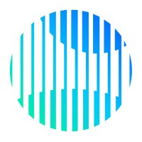
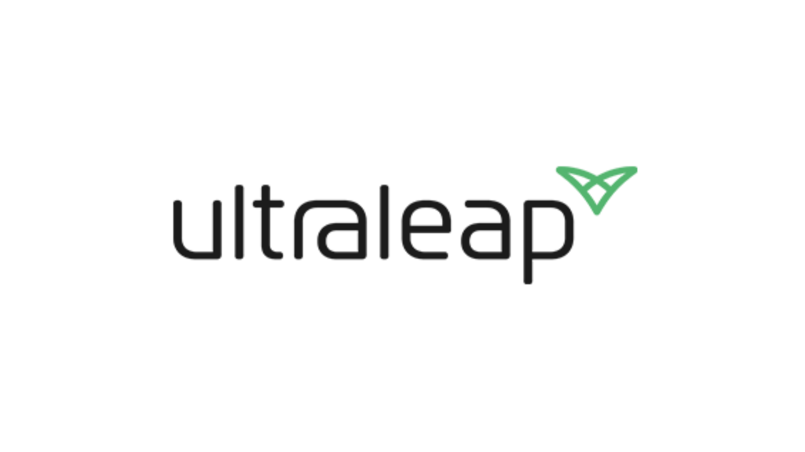

Earthrise Media
Data Scientist, June 2021 - present

• Worked on developing novel systems for the detection and classification of environmental hazards
• Trained and wrote deep learning models in Keras and Tensorflow, mainly computer vision architectures
• Worked on automated hyperparameter optimization to develop efficient and high-performance neural networks
Ultraleap
Software Engineering Intern, Janurary 2017 - June 2018

• Designed computer vision systems to aid in real-time hand tracking, and worked on complex optimization problems
• Worked on both differential and non-differentiable methods to neural network structure and compute optimization
• Worked with TensorFlow Mobile and TensorFlow Lite for mobile deep learning development on Android smartphones
• Used a wide variety of deep learning models, including mixture density models, DCGANs, LSTMs, CNNs, and more
ParseHub
Data Science Intern, Janurary 2017 - June 2018
 • Designed state of the art artificial neural networks for encoding human-readable information into high-dimensional spaces
• Designed state of the art artificial neural networks for encoding human-readable information into high-dimensional spaces
• Worked on natural language processing to create an easy to use, automated web parsing application for the consumer
• Used LSTMs trained on massive amounts of web data to generate random sample HTML web pages and encode data